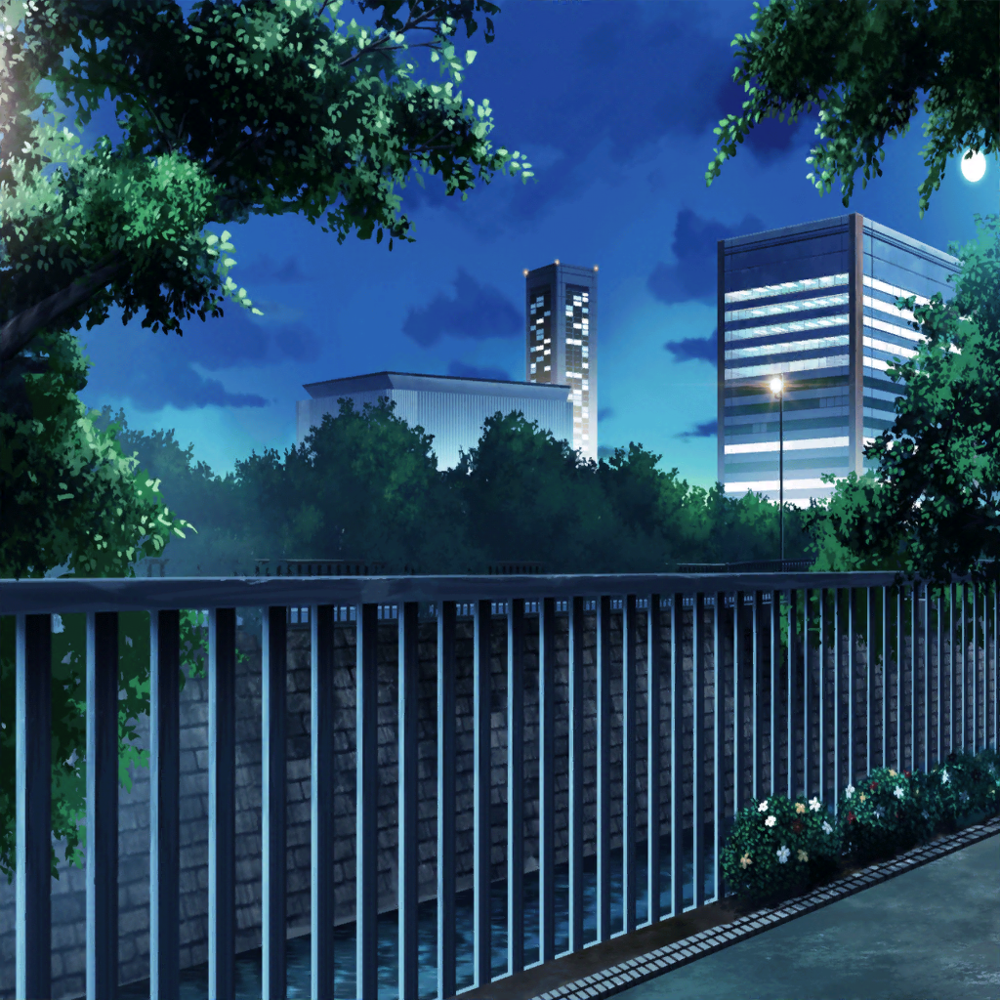

帰り道
リサ
あ……！
 駅前
駅前
あこ・燐子
……友希那さんから……
 氷川家 紗夜の部屋
氷川家 紗夜の部屋
紗夜
メッセージ……
友希那
『私の正直な気持ちを伝えたいので、
みんなに集まってほしい。日時は……』
 数日後
数日後
スタジオ
友希那
揃ったかしら
全員
…………
友希那
まず……この前は、悪かったわ。
１バンドメンバーとして、不適切な態度だった
紗夜
それは、どういう意味の謝罪ですか？
友希那
自分の気持ちを、自分で理解しきれていなかった。
あなた達との関係性を認識しきれていなかった。
そのことに対しての、謝罪よ
あこ
う～？？ えっと……つまり？
友希那
スカウトは断ったわ
燐子・リサ
ーー！！
紗夜
……そうだったとしても、
私達を『バンドメンバー』ではなく
『コンテスト要員』として集めた事実は変わりないのよね？
リサ
紗夜、なにもそんな言い方！
友希那
……やめてリサ。
確かにそうだったんだから、
私は、責められて当然だと思ってる
リサ
だ、だったらアタシにも責任があるよ！
アタシは……ずっとそんな友希那をただ……
見てるだけだったんだから……！
あこ
え……リサ姉……
……スカウトのこと……知ってたの？
友希那
今回のスカウトのことは、私しか知らない。
リサに非はないわ。リサ、少し黙っていて
リサ
黙ってられないよ。
ううん、これからはもう、黙らない！
リサ
アタシは友希那にRoseliaを続けてほしいと思ってる。
それなのに、今回のスカウトのことに関しても、
何もできなかったから……
紗夜
……湊さんの意思がわからないわ
友希那
紗夜の言うとおり、
私はFUTURE WORLD FES.に出場するため
すべてはそれだけの為に、音楽をやってきたわ……
紗夜
FUTURE WORLD FES.は確かに頂点。
私もそれを目指していた。
……でも湊さん、すべてが『フェス出場』の為だと言うなら
紗夜
失礼だけどあなたには……
『フェスに出て』それからどうするのか。
その先のビジョンが、何もないということになる
あこ
えっ。じゃあ、それって……
紗夜
そう。私達は、使い捨て。そういうことよ
リサ
紗夜、それは……っ
友希那
それは違うわ！
友希那
メンバーを探していたときは……そうだった……！
でも……っ、紗夜を見つけて……みんなが集まって……
いつのまにか、私……お父さんのことより……
紗夜
……『お父さん』？
リサ
友希那……
友希那
本当の私はただ、私情のために音楽を利用してきた人間よ
紗夜
……『私情』……
友希那
……少し、長い話になるわ。
昔、一人のバンドマンがいたの……
紗夜
そのバンド……雑誌で見たことがあるわ。
インディーズ時代のものは特に名盤だって……
湊さんのお父さんが……そうだったの……
友希那
私はRoseliaを立ち上げ、
私情を隠し、『自分達の音楽を極める』と偽って、
自分のためだけに、あなた達をだました……
友希那
この前は、上手く言葉にできなかったけど、私には責任がある。
ーー私は、Roseliaから、抜けるべきだと思う。
私と違って、あなた達の信念は本物だから
紗夜
ちょっと、待……
あこ
あ、あこだって……！
友希那
——でもっ！！！！
友希那
でも私は……こんなに自分勝手で、
理想も信念も元を正せばただの『私情』だけど……っ
この五人で音楽がしたい……！ この五人じゃなきゃだめなの！
全員
…………！！
友希那
私はRoseliaを続けたいっ！
でも……みんなの意見は、わからない……
……こんなことをしておいて、都合が良すぎるのもわかってる……
紗夜
あなたが私に言ったのよ。
……私情は、持ち込まないって
紗夜
でも……あなたの気持ちも……わかるわ。
音楽を続ける動機はともかく、始める動機なんて、
みんな……私的なものなんじゃないかしら
あこ
そ、そーだよっ！
あこだって、おねーちゃんみたいになりたかったからだもん！
友希那さんの『お父さん』と、全然一緒だよっ！
燐子
わたしも……どこかで……
……こんな自分を、変えたいって……
リサ
アタシは友希那と……って、言うまでもないか♪
紗夜
抱えているものは、それぞれにあっていい。
どうしても手放せないから、抱えているんでしょう。
だったらそのまま、進むしかない……そうじゃない？
友希那
……紗夜……
紗夜
それに私もまだ、この五人で音楽をしたい
友希那
——！
あこ
ん？ これはもしや……
Roselia、再結成フラグ！？
紗夜・友希那
解散してない
紗夜・友希那
……！
燐子・リサ
……ふふ（はは）
紗夜
Roseliaとして、FUTURE WORLD FES.の
コンテストにエントリーする。
みんな、それでいいかしら
リサ・あこ・燐子
はい！！
友希那
……紗夜、みんな……